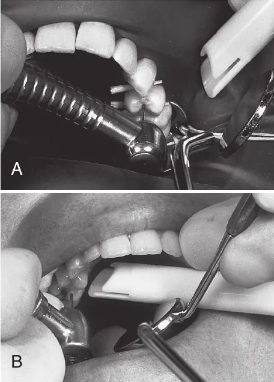
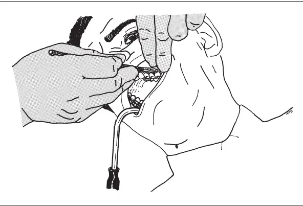

نسخه استخراجشده؛ ترجمه یا تأیید علمی انجام نشده است. وضعیت: captured
دستیار تازهکار هنگام تراش مولر اول بالا، سر HVE را درست زیر سر توربین نگه داشته است. اسپری آب بهجای رسیدن به فرز به درون ساکشن کشیده میشود و بیمار از گرما شکایت میکند. سر HVE باید کجا باشد؟

برای کشیدن آب و خردهها، HVE (ساکشن پرحجم) بر ساکشن بزاق برتری دارد؛ ساکشن بزاق آب را آهسته میکشد و توان کمی برای برداشتن ذرات جامد دارد.
آزمون کفایت HVE: سر ساکشن را در لیوان ۱۵۰ میلیلیتری آب فرو ببر؛ آب باید در حدود ۱ ثانیه تمام شود.
اسپری آب و HVE با هم: خردههای دندان و مادهی ترمیمی از میدان بیرون میروند، میدان تمیز دید و دسترسی را بهتر میکند، و بافتها خشک نمیشوند.
نکتهی طلایی: HVE و ساکشن بزاق جای هم را نمیگیرند. HVE برای حجم زیاد آب و خردهی تراش است؛ ساکشن بزاق برای بزاقی که آرام در کف دهان جمع میشود.
